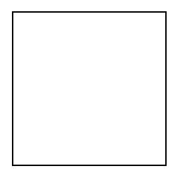
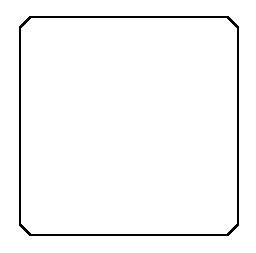
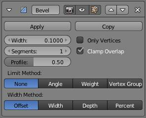
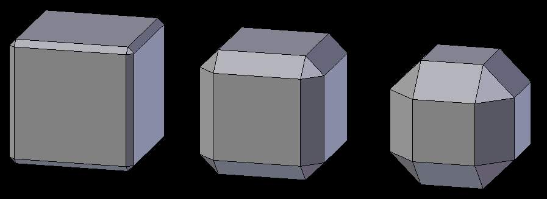
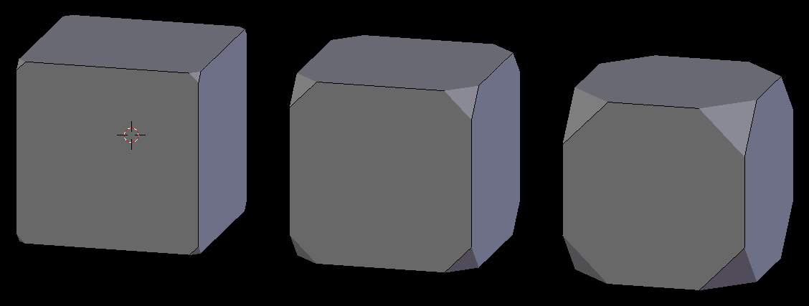

Bevel Modifier¶
The Bevel modifier adds the ability to bevel the edges of the mesh it is applied to, allowing control of how and where the bevel is applied to the mesh.
The Bevel modifier is a non-destructive alternative to the Bevel Operation in edit mode.

Unbeveled. |

Beveled. |
{kind=link}
{kind=link}
The images above show the side views of a plain (unbeveled) cube and a beveled one.
Options¶

Bevel modifier panel.
- Width
The size of the bevel affect. See Width Method below.
Three Cubes with 0.1, 0.3 and 0.5 bevel Widths.
- Segments
- The number of edge loops added along the bevel’s face.
- Profile
- The shape of the bevel, from concave to convex - has no effect if Segments is less than 2.
- Material
- The index of the material slot to use for the bevel. When set to -1, the material of the nearest original face will be used.
- Only Vertices
When enabled, only the areas near vertices are beveled; the edges are left unbeveled.
Three cubes with 0.1, 0.3 and 0.5’ bevel Widths, with Only Vertices option enabled.
- Clamp Overlap
- When enabled, the width of each beveled edge will be limited such that they cannot intersect each other. Edges that are far apart will still bevel with the full width, only edges too close to each other are affected.
- Limit Method
Used to control where a bevel is applied to the mesh.
- None
- No limit, all edges will be beveled.
- Angle
- Only edges where the adjacent faces form an angle smaller than the defined threshold will be beveled. Intended to allow you to bevel only the sharp edges of an object without affecting its smooth surfaces.
- Weight
- Use each edge’s bevel weight to determine the width of the bevel. When the bevel weight is 0.0, no bevel is applied. See here about adjusting bevel weights.
- Vertex Group
- Use weights from a vertex group to determine the width of the bevel. When the vertex weight is 0.0, no bevel is applied. An edge is only beveled if both of its vertices are in the vertex group. See here about adjusting vertex group weights.
{kind=link}
{kind=link}
- Width Method
Used to control how the Width is measured.
- Offset
- Amount is offset of new edges from original.
- Width
- Amount is width of new face.
- Depth
- Amount is perpendicular distance from original edge to bevel face.
- Percent
- Amount is percent of adjacent edge length.